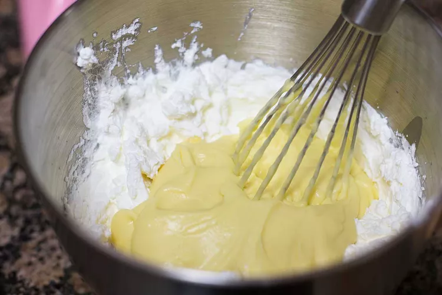

Tiramisu cheesecake is a delightful dessert that combines
the flavors of two classic Italian treats: tiramisu and cheesecake.
This dessert typically features a creamy and rich cheesecake filling with
the addition of coffee-soaked ladyfinger cookies and a dusting of cocoa powder.
It captures the essence of tiramisu's coffee and mascarpone flavors while maintaining
the creamy texture of traditional cheesecake, making it a popular and indulgent dessert choice
for those who enjoy the combination of coffee and sweet, creamy desserts.
PREPARATION
Step 1:
Prep: Lightly oil an 8x8-inch baking dish.
Step 2:
Whisk the yolks and sugar to make the zabaglione:Set a large heatproof bowl over a pan of simmering water to create a double boiler (the bowl should rest on the rim of the pan and the bottom should not touch the surface of the water).
Whisk together the egg yolks and 3/4 cup of the sugar in the bowl. Continue whisking until the sugar has dissolved,
the mixture has increased slightly in volume, and it looks light yellow color. Not sure? Rub a little of the mixture
between two fingers (it will be warm, but not too
hot to touch) – it should feel smooth and silky; if you feel any sugar granules, keep whisking.

Step 3:
Add in the rum:Gradually whisk in 2 ounces (4 tablespoons) of the rum and continue whisking rapidly over the double boiler for about 10 minutes, until the mixture is thick, foamy, and very pale yellow. (You can also use a hand mixer for this step, if you prefer.)
Remove the bowl from the double boiler and set aside until cooled to at least 90°F or room temperature.

Step 4:
Whip the mascarpone and cream:
You can use either a hand mixer or a stand mixer with a whisk attachment for this step. If using a stand mixer, be very attentive and do not walk away while the mascarpone is whipping. Stand mixers are so powerful, that it's easy to overwhip, which causes the mascarpone to separate. You have a little more wiggle room with a hand mixer.
With a hand mixer or in the bowl of a stand mixer with a whisk attachment, beat the mascarpone on medium speed for 15 to 30 seconds, until it smooths out and softens. Be careful not to over-beat or else the mascarpone will separate and become grainy.
With the mixer still on medium speed, gradually add the cream in a thin, slow stream until it's all incorporated. This should take 1 to 2 minutes. Stop the mixer and scrape down the bowl. Continue beating with the mixer on medium-high speed for another 30 to 60 seconds, until the mixture holds firm, not-quite-stiff peaks.
Step 5:
Mix the whipped mascarpone-cream mixture and the zabaglione:Fold 1/3 of the whipped mascarpone-cream mixture into the zabaglione to lighten it, then fold in the remaining 2/3.
Step 4:
Mix the ingredients on medium speed until firm peaks form and the mixture can hold its shape (about 5 minutes).

Step 6:
Make the coffee dipping liquid for the ladyfingers:
In a wide, shallow dish, whisk the remaining 1/4 cup sugar with the remaining 1 ounce (2 tablespoons) of rum, the boiling water, and the espresso powder. Stir to dissolve the sugar and espresso.
Step 7:
Assemble the tiramisu:Dunk one ladyfinger at a time in the espresso liquid, turning it so that all sides are evenly moistened — a quick dunk is all you need; any more and the ladyfingers start to disintegrate. Arrange the dunked ladyfingers in rows on the bottom of the baking dish.
Once you finish the layer, spread 1/2 of the mascarpone mixture over the top. Repeat dunking and arranging a second layer, and spread the remaining mascarpone over top.

Step 8:
Chill the tiramisu:Cover the tiramisu and refrigerate for at least 8 hours or up to 24 hours to give the tiramisu time to firm up and for the ladyfingers to soften.
Step 9:
Serve:Dust with cocoa before serving. Serve in wedges directly from the pan. Leftovers will keep for about 5 days.

Tips for Tiramisu Success
Let your zabaglione cool to room temperature: Technically, it only needs to cool to 90F, but unless you want to whip out your thermometer, let it cool to room temperature or slightly warmer. Too hot and it will melt the whipped cream when you mix them together.
Wait to whip the cream until the zabaglione has cooled: Whipping goes fast and it's best not to let the whipped cream stand around for too long, so wait until the zabaglione is cool before whipping the cream.
Whip the mascarpone with the whipped cream: Many recipes add the mascarpone to the zabaglione, but we found that this sometimes made the zabaglione go inexplicably grainy. Whipping it with the cream instead makes it easier to integrate the mascarpone into the dish without worrying about this issue
Beat the mascarpone for just 15 to 30 seconds to soften: Before whipping it with the cream, beat the mascarpone briefly on its own to soften it. Be careful not to over-whip since the high-fat mascarpone can start to separate. Better to err on the side of under-whipping rather than overdoing it.
Add the cream slowly: After the mascarpone is softened, drizzle in the cream very slowly while beating on medium speed. Once it's all added, stop the mixer, scrape down the sides, and then continue beating for another 30 to 60 seconds until the mixture holds firm peaks.
Aim for whipped cream with firm peaks: You want the whipped cream to be in between soft peaks, where the tips of the whipped cream soften down on themselves, and stiff peaks when the peaks stand straight up. You want a little wobble in your peaks.
Nutrition Facts

Research
allrecipes.com
This site has clear and detailed explanation of each step, even indludes methods to store the food as well as nutrition factors. The message is conveyed in an efficient way.
However, the "how to store" section comes before the actual steps, which means people who only want to see the instructions need to spend long time scrolling down the screen.
Also, I think the website is not visually pleasing enough.
foodnetwork.com
Tis website has chosen to put ingredients and instructions next to each other which I think is successful. There is also a review section for people to interact.
However, there is no pictures on each step and other useful information.
jamieoliver.com
Good thing about this is that the recipes are grouped into different genre. The instruction page also provides personal tips. The webpage is relatively more visually
pleasing than the previous two websites by using colors.
zara.com
The webpage start with captivating picture with limited functionalities that takes up the entire screen. This would leave a lastlasting impression on the viewers. More
dynamic elements are involved in this web design and the functioning buttons are using simple lines which gives the weboage a simplistic vibe.
fontawesome.com
The website utilizes buttons and blocks of colors very well so that the home page is both visually pleasing and increase the effiency of message communication. The users
can directly scan and select whet they need in their website. The webpage gives out a warm and joyful vibe.
nationalgeographic.com
The website has spent much effort in displaying photographs, including making use of the backgorund, animation, and various structures. The text display in each article
is also visually pleasing and at the same maintain high legibility.